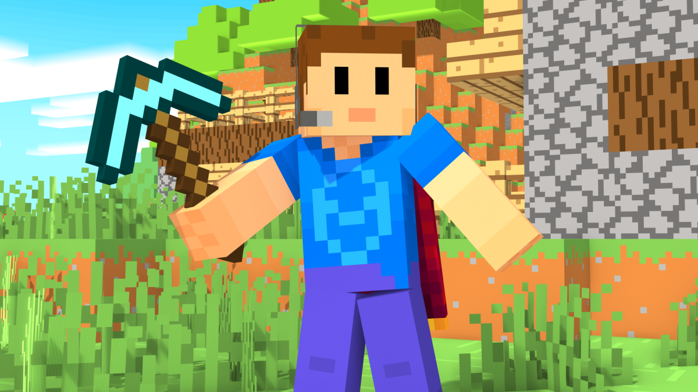

El Minehuy
@elminehuy
@elminehuy
Bueno, primer post del blog, bienvenidos si sois nuevos!
Sinceramente no se que poner hoy aqui xd, pero estoy seguro de que ya se me ocurriran cosas en el futuro, de momento solo quiero anunciar que estare trabajando en proximos videos para mi canal, seguire con el arte 2D y mis renders de Minecraft, que por supuesto podeis ver en mi Twitter @elminehuy, seguidme ahi para mas! Chao
#Blog #Post #LoveTwitter
